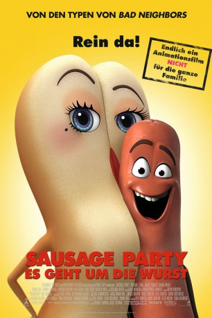

gesehen am 15.02.2017
gesehen am 15.02.2017Alternativ: Sausage Party gesehen am 15.02.2017
 
 IMDB-Wertung: 6.3 / 10
IMDB-Wertung: 6.3 / 10  Metascore:
Metascore: 
Für Lebensmittel im Supermarkt gibt es nur die eine wahre Bestimmung im Leben: In einen Einkaufswagen gelegt zu werden und zu einem Menschen mit nach Hause zu dürfen, um dort in eine Art himmlisches Paradies zu kommen! Wurst Frank wünscht sich nichts sehnlicher, als dort endlich in das sexy Hotdog-Brötchen Brenda gesteckt zu werden. Ein Glas Honigsenf, das in den Laden zurückgegeben wurde, versucht die anderen Produkte vor dem wirklichen, grausamen Schicksal zu warnen, das bei den Menschen auf sie wartet, aber weder Frank und Brenda noch deren leckeren Kollegen wie Sammy Bagel Jr. oder Vash wollen dem Horrorszenario Glauben schenken – bis sie schon bald in der Küche einer Einkäuferin am eigenen Leib erfahren, dass die gefräßigen Riesen selbst vor kleinen Karottenkindern keinen Halt machen…
Jahr: 2016
Dauer: 88 Minuten
FSK: 16
Land: USA Studio: Columbia PicturesTonspuren: DTS - ,
Untertitel:
Auflösung: 1080p (1920x1040) Größe: 4935 MB
Genre: Komödie, Abenteuer, Fantasy, Animation/Trick
Regisseur: Greg Tiernan, Conrad Vernon
Drehbuch: Eliot Asinof
Soundtrack:
Darsteller:
 Alistair Abell als Mariachi Salsa / Gefilte Fish
Alistair Abell als Mariachi Salsa / Gefilte Fish Sugar Lyn Beard als Baby Carrot / Cookies
Sugar Lyn Beard als Baby Carrot / Cookies Michael Cera als Barry
Michael Cera als Barry Ian James Corlett als Apple / Tickilish Licorice / Relish / Bag of Dog Food
Ian James Corlett als Apple / Tickilish Licorice / Relish / Bag of Dog Food Michael Daingerfield als Chunk Munchers Cereal / Light Bulb / Indian Chutney
Michael Daingerfield als Chunk Munchers Cereal / Light Bulb / Indian Chutney Brian Dobson als Italian Tomato / Lettuce
Brian Dobson als Italian Tomato / Lettuce Michael Dobson als Queso
Michael Dobson als Queso James Franco als Druggie
James Franco als Druggie Bill Hader als Firewater / Tequila / El Guaco
Bill Hader als Firewater / Tequila / El Guaco Salma Hayek als Teresa
Salma Hayek als Teresa Maryke Hendrikse als Popped Cherry Mixer / Plum #1 / Loretta Bun / Frozen Fruitz
Maryke Hendrikse als Popped Cherry Mixer / Plum #1 / Loretta Bun / Frozen Fruitz Jonah Hill als Carl
Jonah Hill als Carl Anders Holm als Troy
Anders Holm als Troy Nick Kroll als Douche
Nick Kroll als Douche David Krumholtz als Lavash
David Krumholtz als Lavash Danny McBride als Honey Mustard
Danny McBride als Honey Mustard Lauren Miller als Camille Toh / Tampon
Lauren Miller als Camille Toh / Tampon Edward Norton als Sammy
Edward Norton als Sammy Nicole Oliver als Sally Bun / Ice Cream / Watermelon / Female Shopper #1
Nicole Oliver als Sally Bun / Ice Cream / Watermelon / Female Shopper #1 Craig Robinson als Grits
Craig Robinson als Grits Seth Rogen als Frank / Sergeant Pepper
Seth Rogen als Frank / Sergeant Pepper Paul Rudd als Darren
Paul Rudd als Darren Jason Simpson als Plum #2 / Beer Keg / Fat Guy / Fit Man
Jason Simpson als Plum #2 / Beer Keg / Fat Guy / Fit Man Vincent Tong als Pislitz Chips / Juice Box / Jamaican Rum
Vincent Tong als Pislitz Chips / Juice Box / Jamaican Rum Conrad Vernon als Toilet Paper / Sauerkraut / Catcall Sausage / Grape #1 / Beer Can / Pop Bottle
Conrad Vernon als Toilet Paper / Sauerkraut / Catcall Sausage / Grape #1 / Beer Can / Pop Bottle Sam Vincent als Old Pork Sausage / Refried Beans / Sandwich / Pop Tart / Licorice Rope
Sam Vincent als Old Pork Sausage / Refried Beans / Sandwich / Pop Tart / Licorice Rope Kristen Wiig als Brenda
Kristen Wiig als Brenda Kelly Sheridan als Roberta Bun / Grape #2 / Female Shopper #2
Kelly Sheridan als Roberta Bun / Grape #2 / Female Shopper #2Datei: X:\HD-Trick\Sausage Party - Es geht um die Wurst (2016, FSK16, 1920x1040).mkv seit 13.02.2017
Festplatte: Kinder-Filme+Trick
 Es gibt insgesamt 28 Filme in der Gruppe 'HD-Trick'
Es gibt insgesamt 28 Filme in der Gruppe 'HD-Trick'